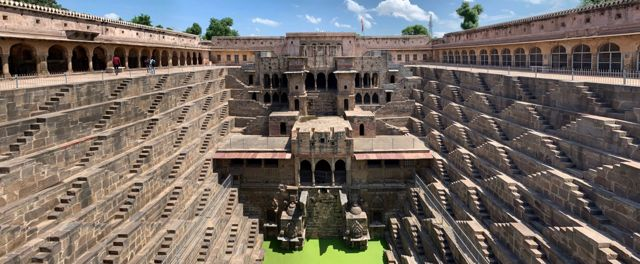
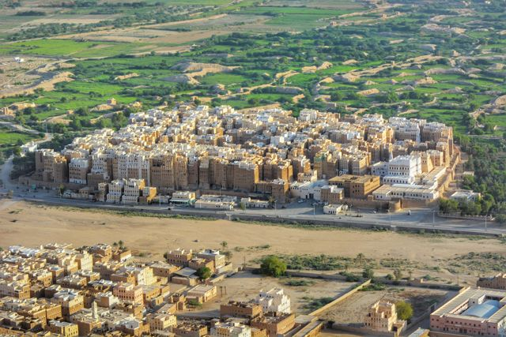

All 100 buildings
All 100 buildings on Discover Architecture, from the Pyramids of Giza to the Burj Khalifa, each told through one photograph, painting, print, drawing or archive photo.
 Abu SimbelNubia, Egypt · c. 1264 BC
Abu SimbelNubia, Egypt · c. 1264 BC Al-KhaznehPetra, Jordan · 1st c.
Al-KhaznehPetra, Jordan · 1st c. AlhambraGranada, Spain · 14th c.
AlhambraGranada, Spain · 14th c. Angkor WatSiem Reap, Cambodia · c. 1150
Angkor WatSiem Reap, Cambodia · c. 1150 Barbican EstateLondon, United Kingdom · 1982
Barbican EstateLondon, United Kingdom · 1982 Barcelona PavilionBarcelona, Spain · 1929
Barcelona PavilionBarcelona, Spain · 1929 Bauhaus DessauDessau, Germany · 1926
Bauhaus DessauDessau, Germany · 1926 Borgund Stave ChurchLærdal, Norway · c. 1200
Borgund Stave ChurchLærdal, Norway · c. 1200 BorobudurCentral Java, Indonesia · c. 825
BorobudurCentral Java, Indonesia · c. 825 Burj KhalifaDubai, United Arab Emirates · 2010
Burj KhalifaDubai, United Arab Emirates · 2010 Casa BatllóBarcelona, Spain · 1906
Casa BatllóBarcelona, Spain · 1906 Casa MilàBarcelona, Spain · 1912
Casa MilàBarcelona, Spain · 1912 Cathedral of BrasíliaBrasília, Brazil · 1970
Cathedral of BrasíliaBrasília, Brazil · 1970
Chand BaoriAbhaneri, India · c. 800 Chartres CathedralChartres, France · 1220
Chartres CathedralChartres, France · 1220 Chrysler BuildingNew York, United States · 1930
Chrysler BuildingNew York, United States · 1930 Church at AuversAuvers-sur-Oise, France · 13th c.
Church at AuversAuvers-sur-Oise, France · 13th c. Church of St GeorgeLalibela, Ethiopia · c. 1200
Church of St GeorgeLalibela, Ethiopia · c. 1200 Church of the LightIbaraki, Japan · 1989
Church of the LightIbaraki, Japan · 1989 Château de ChambordLoir-et-Cher, France · 1547
Château de ChambordLoir-et-Cher, France · 1547 ColosseumRome, Italy · 80
ColosseumRome, Italy · 80 Crystal PalaceLondon, United Kingdom · 1851
Crystal PalaceLondon, United Kingdom · 1851 Dancing HousePrague, Czech Republic · 1996
Dancing HousePrague, Czech Republic · 1996 Doge’s PalaceVenice, Italy · 1340
Doge’s PalaceVenice, Italy · 1340 Eiffel TowerParis, France · 1889
Eiffel TowerParis, France · 1889 Einstein TowerPotsdam, Germany · 1921
Einstein TowerPotsdam, Germany · 1921 El Castillo, Chichen ItzaYucatán, Mexico · c. 1000
El Castillo, Chichen ItzaYucatán, Mexico · c. 1000 Empire State BuildingNew York, United States · 1931
Empire State BuildingNew York, United States · 1931 FallingwaterMill Run, United States · 1939
FallingwaterMill Run, United States · 1939 Farnsworth HousePlano, United States · 1951
Farnsworth HousePlano, United States · 1951 Flatiron BuildingNew York, United States · 1902
Flatiron BuildingNew York, United States · 1902 Florence CathedralFlorence, Italy · 1436
Florence CathedralFlorence, Italy · 1436 Forbidden CityBeijing, China · 1420
Forbidden CityBeijing, China · 1420 Gare Saint-LazareParis, France · 1837
Gare Saint-LazareParis, France · 1837 Great Mosque of DjennéDjenné, Mali · 1907
Great Mosque of DjennéDjenné, Mali · 1907 Great Mosque of KairouanKairouan, Tunisia · 836
Great Mosque of KairouanKairouan, Tunisia · 836 Great ZimbabweMasvingo, Zimbabwe · 11th–15th c.
Great ZimbabweMasvingo, Zimbabwe · 11th–15th c. Guggenheim BilbaoBilbao, Spain · 1997
Guggenheim BilbaoBilbao, Spain · 1997 Habitat 67Montréal, Canada · 1967
Habitat 67Montréal, Canada · 1967 Hagia SophiaIstanbul, Türkiye · 537
Hagia SophiaIstanbul, Türkiye · 537 Hawa MahalJaipur, India · 1799
Hawa MahalJaipur, India · 1799 Himeji CastleHimeji, Japan · 1609
Himeji CastleHimeji, Japan · 1609 Houses of ParliamentLondon, United Kingdom · 1870
Houses of ParliamentLondon, United Kingdom · 1870 Hōryū-jiNara, Japan · 607
Hōryū-jiNara, Japan · 607 IIM AhmedabadAhmedabad, India · 1974
IIM AhmedabadAhmedabad, India · 1974 Kinkaku-jiKyoto, Japan · 1397
Kinkaku-jiKyoto, Japan · 1397 Kiyomizu-deraKyoto, Japan · 1633
Kiyomizu-deraKyoto, Japan · 1633 Leaning Tower of PisaPisa, Italy · 1372
Leaning Tower of PisaPisa, Italy · 1372 Lotus TempleNew Delhi, India · 1986
Lotus TempleNew Delhi, India · 1986 Machu PicchuCusco Region, Peru · c. 1450
Machu PicchuCusco Region, Peru · c. 1450 MASPSão Paulo, Brazil · 1968
MASPSão Paulo, Brazil · 1968 Mont-Saint-MichelNormandy, France · 8th–16th c.
Mont-Saint-MichelNormandy, France · 8th–16th c. MonticelloCharlottesville, United States · 1809
MonticelloCharlottesville, United States · 1809 Mosque–Cathedral of CórdobaCórdoba, Spain · 785
Mosque–Cathedral of CórdobaCórdoba, Spain · 785 Nakagin Capsule TowerTokyo, Japan · 1972
Nakagin Capsule TowerTokyo, Japan · 1972 Nasir al-Mulk MosqueShiraz, Iran · 1888
Nasir al-Mulk MosqueShiraz, Iran · 1888 National Assembly of BangladeshDhaka, Bangladesh · 1982
National Assembly of BangladeshDhaka, Bangladesh · 1982 National Museum of Western ArtTokyo, Japan · 1959
National Museum of Western ArtTokyo, Japan · 1959 Neuschwanstein CastleBavaria, Germany · 1886
Neuschwanstein CastleBavaria, Germany · 1886 Notre-Dame de ParisParis, France · 1260
Notre-Dame de ParisParis, France · 1260 Palace of AssemblyChandigarh, India · 1962
Palace of AssemblyChandigarh, India · 1962 Palace of VersaillesVersailles, France · 1682
Palace of VersaillesVersailles, France · 1682 PantheonRome, Italy · 125
PantheonRome, Italy · 125 ParthenonAthens, Greece · 438 BC
ParthenonAthens, Greece · 438 BC Petronas TowersKuala Lumpur, Malaysia · 1998
Petronas TowersKuala Lumpur, Malaysia · 1998 Potala PalaceLhasa, Tibet · 1649
Potala PalaceLhasa, Tibet · 1649 Pyramids of GizaGiza, Egypt · c. 2560 BC
Pyramids of GizaGiza, Egypt · c. 2560 BC Robie HouseChicago, United States · 1910
Robie HouseChicago, United States · 1910 Rouen CathedralRouen, France · 1506
Rouen CathedralRouen, France · 1506 Royal PavilionBrighton, United Kingdom · 1823
Royal PavilionBrighton, United Kingdom · 1823 Sagrada FamíliaBarcelona, Spain · 1882–
Sagrada FamíliaBarcelona, Spain · 1882– Sainte-ChapelleParis, France · 1248
Sainte-ChapelleParis, France · 1248 Salisbury CathedralSalisbury, United Kingdom · 1258
Salisbury CathedralSalisbury, United Kingdom · 1258 Salk InstituteLa Jolla, United States · 1965
Salk InstituteLa Jolla, United States · 1965 Santa Maria della SaluteVenice, Italy · 1687
Santa Maria della SaluteVenice, Italy · 1687 Seagram BuildingNew York, United States · 1958
Seagram BuildingNew York, United States · 1958 Sensō-jiTokyo, Japan · 645 / 1958
Sensō-jiTokyo, Japan · 645 / 1958 Shah MosqueIsfahan, Iran · 1629
Shah MosqueIsfahan, Iran · 1629
ShibamHadhramaut, Yemen · 16th c. Shwedagon PagodaYangon, Myanmar · 14th c.
Shwedagon PagodaYangon, Myanmar · 14th c. Solomon R. Guggenheim MuseumNew York, United States · 1959
Solomon R. Guggenheim MuseumNew York, United States · 1959 St Mark’s BasilicaVenice, Italy · 1092
St Mark’s BasilicaVenice, Italy · 1092 St Paul’s CathedralLondon, United Kingdom · 1710
St Paul’s CathedralLondon, United Kingdom · 1710 St Peter’s BasilicaVatican City · 1626
St Peter’s BasilicaVatican City · 1626 StonehengeWiltshire, United Kingdom · c. 2500 BC
StonehengeWiltshire, United Kingdom · c. 2500 BC Sydney Opera HouseSydney, Australia · 1973
Sydney Opera HouseSydney, Australia · 1973 Taj MahalAgra, India · 1653
Taj MahalAgra, India · 1653 Tate ModernLondon, United Kingdom · 2000
Tate ModernLondon, United Kingdom · 2000 TempiettoRome, Italy · 1502
TempiettoRome, Italy · 1502 Tintern AbbeyMonmouthshire, United Kingdom · 1301
Tintern AbbeyMonmouthshire, United Kingdom · 1301 Tower BridgeLondon, United Kingdom · 1894
Tower BridgeLondon, United Kingdom · 1894 United States CapitolWashington, United States · 1800 / 1866
United States CapitolWashington, United States · 1800 / 1866 Unity TempleOak Park, United States · 1908
Unity TempleOak Park, United States · 1908 Villa La RotondaVicenza, Italy · 1592
Villa La RotondaVicenza, Italy · 1592 Villa TugendhatBrno, Czech Republic · 1930
Villa TugendhatBrno, Czech Republic · 1930 Wat ArunBangkok, Thailand · 19th c.
Wat ArunBangkok, Thailand · 19th c. Westminster AbbeyLondon, United Kingdom · 1269
Westminster AbbeyLondon, United Kingdom · 1269 Yoyogi National GymnasiumTokyo, Japan · 1964
Yoyogi National GymnasiumTokyo, Japan · 1964